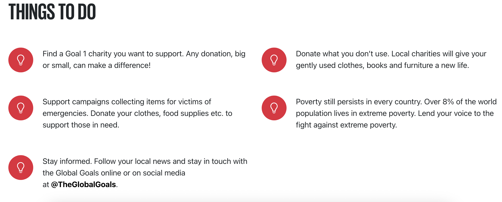

UN Global Goal: No Poverty
Goal: End poverty in all its forms everywhere.
Poverty affects millions of people around the world and limits access to basic needs like food, shelter, education, and healthcare. Supporting this goal means working toward a fairer, more equal society.
Forms are everywhere. Ending poverty isn’t just a charitable act — it’s a matter of justice and a crucial step toward unlocking humanity’s full potential. Yet, nearly half of the global population still lives in poverty. Every day, thousands die from hunger and lack of clean water. Together, we have the power to make a difference — to feed the hungry, fight disease, and create a world where everyone has the opportunity to thrive, grow, and live a meaningful life.
Interactive: Did You Know?
About how many people still live on less than $1.90 a day?
Answer: Over 700 million people still live on less than $1.90 a day.
